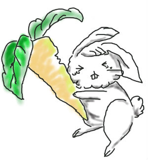
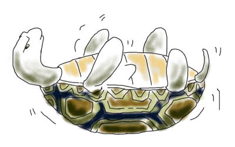
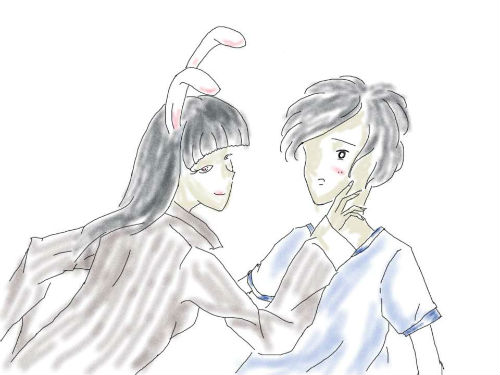

一只来自外星的兔子
作者：、 、 、 、 图：
A.遇见
下班回来走在路上，忽然听到身后似乎有人喊我的名字，回头看了好几次，街上行人脚步匆匆，嘴一开一合的也没有一个看着我的，郁闷中，尖尖细细的声音仍在继续：“低头！低头！！看下面！！！”，我低头一看，乐了，一只兔子啊，白亮的大门牙让我想起了一个叫龅酥牙的家伙。不过好奇怪，这只兔子居然会说话。
会说话的兔子？真是不可思议。我决定停下自己匆忙的脚步，你就是人类吗？兔子瞪大了它红红的眼睛，小心翼翼的瞅着我。我决定逗一下这个小家伙。我不是，我是大灰狼。兔子往后退了几步，将自己缩在阴影下。过了一会，它探出脑袋，细细地说：“你能不能别吃我...”
我憋着笑，怕它的特别引发交通混乱，把它抱起来，边走边拨弄着它粉粉的耳朵，装作思考的样子，很严肃地说:“可是，我很饿，刚下班，我还没吃饭呢～”它红宝 石般的眼睛突然一亮，变戏法一般从怀里拿出一根胡萝卜:“当当当～当！给你这个吃，我最喜欢吃胡萝卜了，肉一点儿也不好吃。”
我拿过兔子手中的胡萝卜，又是哪个不长眼睛的小妖怪，竟然能被这么笨的兔子抓住。“可是我是大灰狼…”兔子毛茸茸的耳朵颤了颤，“我的肉真的不好吃…唔，你身上味道好好闻，和别的大灰狼不一样。”这只兔子真没有在一个“大灰狼”怀里的觉悟，真是笨兔子..
等等！别的灰狼？它到底被几只灰狼抓住过？此刻我突然很想知道，这么笨的兔子是怎么屡屡逃脱的...只听兔子说:“老师给我们讲过，大灰狼没有兔子跑得 快。”难道是激将法？这也太小儿科了吧？这时它又说：“我一开始也以为这样，后来发现，老师作弊了，它每次被抓住后都提出赛跑，然后一落地就用胡椒粉喷大灰狼眼睛……”
靠，这么高的智商？拿它为什么要喊住我？难道不认识 灰狼，每次被抓住都是被蒙着眼睛？“其实我也没被大灰狼抓到过几次，也就是和小伙伴捉迷藏时找不到它们了，然后有几次抱住了大灰狼的腿...这次也是不知 道怎么回事就来到这里了。这里都是你这样的灰狼么？我看你衣服上画着胡萝卜就喊你了...”
“胡萝卜你妹啊，那是apache图案好不好？”我咆哮道。兔子却大喊：”你骗人！你肯定在骗我，我明明闻到了胡萝卜的味道，就是从你的 身上散发出来的！那个不是 Apache！“说完就哭了起来。我闭目养神一会，我是不是真的伤了兔子的心了，为什么一个萝卜居然会令兔子如此着迷？但是我不是兔子，我不知道萝卜在它生 命中的意义。大概沉默了一分钟，其实我觉得是一个小时，我开口了，你为什么那么喜欢萝卜？兔子看了看我，呆了一会，眼神与我相遇，用它那可怜的眼神。我差 点看到了里面的眼泪。我突然感到，我作为未知生物的责任，不，应该是陌生人的责任，我应该说句安慰的话，但是我还是不明白，不明白萝卜在它心目中到底代表着什么。末了，我只好说一句，我觉得应该说点什么，但是我不知道怎么说。兔子还是看着我，目不转睛地，我放佛看到了它眼里深沉的黑色下面掩盖着的感人肺腑 的故事以及那份炙热的渴望。我说，其实，其实，或许不是你想的这样的……但是，但是，没等我说完，兔子也开口了，抛给我一句至今仍然难以忘怀的话，就想一万头草泥马在心中奔腾、不、是疾驰：“兔子不就是喜欢吃萝卜的吗？”
然后，这只笨兔子用它尖尖的爪子不停的戳我。过了一分钟，它好像发现新大陆般，在我身上嗅来嗅去。“咦，真的有胡萝卜的味道。”它扭过头，用湿漉漉的眼神看着我“我可以舔舔吗？”舔你妹啊舔，我发誓，我一定是抽风了才捡回这么个兔子，这货是哥斯拉吧，今天出门真不该穿这T恤啊啊啊啊，要是那件仨月没洗过的衬衫就好了...
看着一脸憧憬的兔子，和我手里似乎长大了一些的胡萝卜，我居然生出了一种叫做不忍心的感觉，如果在这个偌大的陌生的纷乱的世界里，它一眼就找到了我，那是不 是也算一种缘分？不管它是谁，来自哪里，它在我饿的时候给了我它自己最喜欢的胡萝卜，哪怕只是因为不想自己被吃掉...这么小的东西，说不定真的就被大灰 狼抓走了，也可能是智能生物研究所...算了，带它回家吧。于是我拍拍它的脑袋，尽量温柔地告诉它：“如果你没有地方可去，跟我回家吧。”它显然被这个惊 喜感动了，居然脱口而出：“那我告诉你我的一个秘密，我会一种很厉害的法术。”
我发誓，当时真的完全惊呆了。在知道那是一只会说话的兔子之后，我的确想过它是不是还有其它的秘密武器，否则怎么敢那样大摇大摆地走在大街上，可是如今，当它脱口而出那些足够让每一个地球人欣喜若狂的话时，我却深深地感到愧疚了。
它说，第一，在自己星球以外的地方，自己的躯体并不是不死不灭的，可能要和地球上的兔子一样短寿了；第二，它拥有的法术可以帮任何人实现任何心愿，包括一些不切实际的心愿，当然，随着愿望科幻水分的增加，愿望实现后分裂出去的空间维持的时间也就越短。
最后，它补充说，由于年龄限制，它的法术每天只能使用一次。于是，作为对它真诚态度的回报，我也告诉了它我的秘密:“其实，我并不是大灰狼，只是一个普通得再不能普通的人类。至于身上的胡萝卜味道，是因为中午喝胡萝卜果汁时不小心打翻了了杯子。”
它显然有些失望，这么纯洁的孩子，不，兔子，似乎只对胡萝卜感兴趣...
B.同居
于是，我和一只来自未知星球的兔子，开始了一段未知的同居时光。在我考虑要不要买几只活的兔子每天给它做伴时，意外地发现，它和邻居家的一只乌龟不知什么时 候已经打得一片火热。说起来奇怪，它最喜欢做的事情就是趴在乌龟背上，和龟兄弟一起享受那有限的活动空间里悠闲的慢节奏生活。也许，龟兔赛跑中的那只兔子 根本就是躺在龟壳上睡着了然后无知无觉地滚下去继续睡才输了吧，我这样想。
这样看来，兔子暂时不会感到孤单了，而我也慢慢地习惯了它在家里扮演一只宠物的角色，直到有一天......
有 一天，下班比较晚，回到家，却发现家里出现了两只兔子，还有一只黑兔，是我没见过的，一时感到好笑，难道它找到同类朋友了？随口问了一句，却差点被吓 死……那只黑兔居然是先前总驼着它到处走的……乌龟……“为什么？”我惊诧地问道。它很淡定地指着乌龟回答:“它说想要尝试一下奔跑的感觉。”“然后 呢？”“然后就这样了啊，只不过，它今天有些兴奋，你的房间可能会比较乱……”话还没说完俩兔子就狂奔向门外了……我推开自己房间门，地上一片狼藉，床上到处都是黑色的兔子毛……
没过两天，我又看到了之前一只兔子和一只乌龟令人亮瞎眼的组合了，还没等我露出好奇的神色，就再一次差点被吓死了……那只生在红旗下长在红旗下的地球上的乌龟居然开口说话了：“我-还-是-觉-得-这-样-更-有- 安-全-感-一-些-。”这个解释挺合理的，而且我也不用担心哪里有黑兔毛出现了。其实乌龟多虑了，它只是习惯了把慢吞吞当做稳重，习惯了把坚硬而笨拙的 壳当做随时待命的退路，当它突然走运变得轻巧灵活的时候，它却不习惯了。当然，这个故事也说明，做真正的自己，才是最舒服的。
自从乌龟有了说话的本领，那两只会说话的家伙就在我家安营扎寨了，我过上了自己曾经幻想过很多次的动画片一般的生活。不过幸好，我是一个只需要和电脑交流的 程序员。我真的不敢想象，乌龟和兔子为了争一根胡萝卜——也不知道可怜的乌龟是什么时候被恶趣味的兔子修改了食物链...——而对着彼此唾沫飞溅破口大骂 的场景要是被别人看到了，会不会承受不住心理冲击直接挂了，那就真的罪过大了……
不过，我突然想到，兔子不能把自己变成乌龟么？或者可不可以使自己拥有乌龟的寿命呢？
“不行。”兔子叹了一口气，“我可以帮任何人实现心愿，但除了我自己。”
秒懂，这就是传说中“自作孽不可活”的正解。
不知不觉，春节就要来临了，公司里很多事情凑在一起，连我这个平素自诩有闲的人也在说话行动间也加快了节奏。有天夜里居然加班到12点，回去的时候地铁停了出租车也没了，站在宽阔无人的冬夜的大街上，整个人都感觉无比萧索...
踢 踢踏踏地沿着马路牙子一路走回家，边走边想，自己也真够失败的，毕业五六年了，还维持着无女友、无车、无房的三无状态。想起上个光棍节，公司十几个光棍一 起去K歌拼酒，半夜两三点的时候，整个KTV里都回荡着我们包间里鬼哭狼嚎般的歌声，什么《死了都无爱》、《单身痛歌》、《2002年的最后一场爱》，气 氛high到极点的同时，汉子们不为人知的痛苦似乎也酝酿到了极点，然后就一路下滑，还没等我好好回味单身汉子的心酸和委屈，就听到有人号啕大哭，随后， 大家都沉浸在了自己的哭声中。
默默掏出自己廉价的安卓手机，在QQ空间写上一条说说：“大喜常常与大悲相携相伴，狂欢之后往往一片死 寂。”很快，就收到了某女的一条回复：“好文艺...佩服佩服！”手指飞快地在9宫格中旋转起舞：“呵呵，只是现在的心情而已，不说了，我去睡觉，你也早 点休息，女孩子不要经常熬夜。晚安罢。”对方回复：“嗯嗯，晚安～”
装x的人生不需要解释，然后，我倒在包间里舒适的沙发上，慢慢睡去。即使新的一天是重复的、无趣的、令人反感的，我都要精神饱满地欢迎它的到来。
而现在，周围仍然是一片死寂，印象中美丽而璀璨的夜空，像是被上帝的大手搅翻了的一锅豆腐脑...说起豆腐脑，突然感到好饿...“要是再有个肉夹馍就完美了...”我自言自语。
没想到的是，面前竟然真的出现了一个肉夹馍！一定见鬼了！！谁！！！给老子滚粗来！！！！
脚边传来弱弱的声音：“你在说我么？”
原来是这货...我是该热泪盈眶呢还是该热泪盈眶？我吸了吸鼻子，不想跟这只兔子废话。
“发现你没回家，我出来找你...而且跟了你好久，你想吃这个？...”兔子托起肉夹馍，似乎被那味道呛了一下，打了个大大的喷嚏：“啊啊啊啊啊——阿嚏！肉 不仅不好吃，还不好闻～～真搞不懂你怎么喜欢吃这个。喏，给你——”它捏住鼻子，把手里的东西举起来，饱含期待地看着我。
“其实……你为什么喜欢吃肉？”兔子问。
我听了一愣。蓦然回首，眼神直接与兔子相遇。那一刹那，我沉思了。我发现手上这片肉夹馍竟然如此沉重，重得我一手拿不住，竟然要用另一只手托着，并且越发感到沉重。我是不是应该掩盖一下这个真相？
不过……是啊，为什么我要吃肉呢？我茫然了，眼里反射着与兔子相遇那晚的漫天繁星。
兔子的面容发生了一点变化，脸色沉了下去。我觉得是失望、是无奈，是感叹现实太过残酷。我想我该说些什么。
但是没等我说话，兔子开口了，“我是不是问错了什么丫？”
这一刹那，我思想更加沉默了！不是因为那句话，而是它说话时候露出的那龅酥牙。一瞬间，我又想起了她……
多 情自古伤离别，更那堪，冷落单身夜！还记多年前的的夏天，我与她相遇，相遇在那一个深秋，小身材，大眼睛，双眼皮，乌黑长发。我刚考完了高考，正踌躇满 志地奔向未知的远方，那个后来有一个被我称为中心屠宰场的远方。我告别了多年的朋友，还有她。独自一人出发了……但我永远无法忘记，还在风中摇曳的那双 手、哭泣的脸、还有那若隐若现的……龅酥牙……
后来，我还是走了。现在，竟然还有一个和她一模一样的牙出现在我面前。
但是，兔子的眼镜开始湿润了。我觉得是因为我的迟钝吧，因为，从第一句话开始到现在，我清楚地记得，我已经思考了2分14秒了。毕竟岁月不饶人，我的想法也从单纯的喜不喜欢吃肉转移到了那龅酥牙上。兔子低头了。它在哭泣吗？我觉得我是时候说句话了。
“kao，你喜欢吃就吃去吧！谁强迫你似的，真没意思！”
说完走了，留我在风中凌乱。
看着兔子远去的身影，我不由得回想起当年龅酥牙离开的身影。
那是一个夏天的黄昏，阳光正好从她离去的方向照过来，我能看到的只是暖暖的阳光和一道深色的背影，慢慢地变小直到消失在黄昏中。
可兔子的身影却要比她娇小，奔着太阳三五秒就不见了，谁叫它是个兔子的呢，跑那么快。我也很快从回忆中醒过来，慢慢地走回家去。
推开家门，我依旧去找我的小乌龟，看看它今天过得怎么样，有没有长大一点点，虽然我心里很明白要看到乌龟长大，除非我变老了。
不料一推开门，却发现兔子已经蹲在我的乌龟旁边了，它不是跑了嚒？它在跟我的乌龟干什么？我脑子里都是疑问。没等我反应过来，这只兔子竟然自己转过身来-就 是那只，露着龅酥牙的兔子，给我萝卜的兔子。没等他说话，我问他：“你怎么这么快就回来了？不是走了么？还有你想对乌龟做什么？“
兔子被我一连串的问题问住了，半天吐出一个词：萝卜。我看了看手中的萝卜，发现居然被咬了一口，而且很像是被兔子咬过的，两个龅牙印特别明显，“那个萝卜被我咬过了，给你换一根吧。”说着他又拿出一根萝卜递给我...
我很惊愕，不知道该说什么。
“嗯，好吧。这个给你。”说着把萝卜递了过去。但不知道为何，竟然有点不舍，我死死地看着上面的牙印。
但是兔子还是把萝卜给拽过去了，我手上换来了一根新萝卜。
原来只是为了一根萝卜。原来不关我事，我心情一下子低落了许多。我叹了一口气。不过没事，自从见了这只兔子以后，虽然不知道为什么兔子喜欢萝卜，我已经买了很多萝卜。就为等着它回来。
不过，我想，从明天起，做一个吃萝卜的人，不对，正确地说是做一个吃萝卜的陌生人，喂兔子、工作、云游四海。有点自相矛盾，不过没关系，我做梦的时候可以去任何地方。
然后，我和兔子坐在一起了，它在一边啃着带着牙印的萝卜，吃得很开心的样子。
“这里还有很多。”我也陪了陪笑。
兔子把剩下的萝卜给了乌龟，笑着看着乌龟说，快吃吧快吃吧，吃了快高长大。但是小乌龟似乎不太配合，一直缩在壳里不肯出来。兔子不服气，一边吃着一边跳来跳去，有时候乌龟正要探出头来，却被兔子突然跳出来吓着了又缩回去。
来回好几次，看得我笑了起来。抬头看了看天空，又是漫天繁星。
我看了看手中的肉夹馍，还没吃完，于是继续啃了起来。
C.春节
波澜不惊的日子过得了无痕迹，由于没买到回去 的车票，春节只好在这生活了接近十年的城市里度过了，也好，省得我还要为两只宠物的去向发愁。看来一切皆有天意……母亲打来电话说，如果再不带女朋友回家 过年，她就在村里随便给我找个女的定亲了……可是，这么现实的的社会，妹子们都去找干爹了，我能怎么办。要不，让兔子给我变一个女朋友算了。
我被自己的想法吓了一跳，随即又想，不如借此看看兔子在这个空间里法力究竟怎么样吧。说起来真羡慕丫，有胡萝卜万事足。
当我带着怀疑、好奇、希望等等复杂的眼神观察窝在沙发里专心看拳击比赛的兔子时，它缓缓转过头阴森森地说:“表酱紫看着人家了，我造你想干什么。”
话刚说完，一个美女现在了我的面前，我们相距仅仅10公分，盯着美女鼻尖细细的绒毛，我的脸“刷”得一下，红透了……然后，美女用某兔得瑟的语调说:“就你 这出息……”我茫然地推开美女，四下望去，果然不见兔子了。我是让它凭空给我变出一只美女啊，知道了美女的原型还怎么有兴趣继续呢？“变回去！”我没好气 地说。
我要崩溃了，并没有丝毫看到美女的喜悦，而是忧桑地思考:“兔子那8000立方厘米的窝里怎么能睡下这么大体积的美女？”
带着满脑子的疑惑，我拥着可爱的棉被慢慢进入了梦乡，窗外不知什么时候已经大雪纷飞。
第二天，毫无意外地，兔子感冒了，不仅感冒，还拉肚子，因为它晚上没盖好，作为人的最后几分钟还喝了太多水。
乌龟兄早早的进入了冬眠，兔子能靠的只有我了。于是，我告诉自己:“天将降大任于斯人也，必先苦其心志，劳其筋骨……”
生 病中的兔子格外挑食，胡萝卜只吃中心区域的，以前喝水就少，现在几乎被拉肚子吓得绝水了，怕死的家伙，哼哼，让你没事变美女。不过兔子为什么要舍弃自己的 本体变成美女呢？难道它看上了我这只萌宅？“不，我只是想体会一下和你平视的感觉，你知道，总仰着脖子，很不好受的。”兔子说。
面对这只没有一丝宠物觉悟的兔子，我已经从开始的惊讶变得习惯，甚至菜市场的大妈几天不见我时都会主动打招呼：“最近胡萝卜又便宜了，你要不储存一些？”
这个春节似乎特别漫长，一个人吃年夜饭（虽然只是超市买的速冻饺子），一个人看春晚，一个人赏焰火，一个人压马路，偶尔接到母亲打来的电话，也是烦闷得不知 道说什么好，有一次情绪不怎么好，似乎惹得母亲那头伤心了，她说：”你再这样我就不打电话了，人家想你了你就是这种态度啊。“然后我就听见电话那边寂寞的 “嘟嘟”的声音。
我已经麻木了，因此已经有足够的勇气和能力直面寂寞和指责。
兔子却大哭起来：”呜呜，嘛嘛也不知道我在 这儿...我也不知道自己怎样才能回去...老师肯定每天都念叨我了...像我这么可爱的孩子，所有兔都会想我的...哇呜呜...我已经7岁了，按照你 们这儿的算法，还有四五年就要老死了...你赔我嘛嘛，赔我老师...呜呜...“它的泪水已然决堤，而我根本不知道要去怎样安慰，顿时有些手忙脚乱不知 所措起来。
这时候乌龟被难得地吵醒了，它费力地睁开一侧的绿豆眼，慢吞吞地说了三个字：”胡萝卜...“我一拍脑袋，怎么把这茬给忘了！
”1——2——3—“三秒之后，兔子闻着胡萝卜香甜的味道，艰难地停止了哭泣。
我不知不觉也吃起了胡萝卜。生的萝卜有点涩，吃起来的感觉怪怪的，兔子的口味真奇怪。不过，世界上大概没有其他食物更能代表此刻的心情了。
D.约会
电话响了一下。我拿起来看，是 K 的电话。
“最近在干什么啊？有心情出来聚聚不？”
“没心情……”
“来，哥们给你介绍个妹子吧。别一天到晚看一路向西。”
“……”
好朋友就是这样，什么都不用掩饰，不用做作。不过我真的没看过一路向西，只是大一相遇那天偶然点了个广告进去了被K看到了，结果一直被他说到今天。好朋友不好的地方也是这样，稍有不慎恐怕这辈子都别想洗清了。
“哥来教你追女孩吧！”
“又哪个妹子啊？”我问。
“漂亮到你不可能想象得到！”
“……”
“比四年前那个好啦，那次是个意外！”
“别总提四年前好不好啊。”
“哎呀，那次只是意外，兄弟，这次真的比四年前的要好得多。”
“……”
“来吧，我知道你没什么事。”
“随便吧。”
“我们在城中小西天。你忙完过来。”
没等我开口电话就挂了。每次都这样，逢年过节，隔三差五就来个电话，说些不三不四的内容，然后总会在小西天结束。
话说，小西天这个地方真的是个好地方，每年过去，见到的人都不相同。
“走，我们去小西天。”我站起来，顺便用手带了一下兔子。
但是，兔子不见了。
“好吧，不带上它也好，上次变个大美女，这次不知道又要变什么了，总是添乱。”我心想着，然后准备出发到小西天。
说起小西天，其实只是在 A 区 214 号的一家普通的酒店，号称全方位服务，其实这个小城有什么全方位服务呢，不过就是什么KTV、桌游店集大成而已。之所以叫做小西天，是因为，西天是极乐世 界，小西天，就是小的极乐世界，图个名堂而已。俗人就是这样，说话总是拐点弯，不走直道。不过拖离不了俗的本质。看看那些俗语，什么“春天的雷，涨潮的水”，说的就是“留不住”。
戴着耳机，闲着无聊，我牵着乌龟慢悠悠地走着，绕着一圈远路。嗯，除了无聊这个显而易见的借口外，还有一个原因……和那个牙就是在这个地方相遇的。虽然已经回不去了，但是这里的一草一木都让我记忆深刻。不知道小牙最近怎样？有没有想我？
“不觉意，在地球已经生活了二十多年了。”一边走着，一边叹息。乌龟在我的口袋里努力地弹出它的小头，好奇地望着这个世界。“还是看现在吧~”
“兔子会在哪里？”我突然有点好奇。
走着已经到了 A 区 214 号。服务员见到我，马上笑了起来，说，“K 公子已候多时，客官请上二楼雅座。”
我总感觉有什么不对。
“兄弟终于见到你了！”K 还是那么热情，“我跟你说啊，老兄我这些日子过得真不畅快啊！什么毕设，老师居然让我写论莎士比亚名著在今天拍电影的意义。”
我想起了莎士比亚的名句，2B or not 2B, That's a question。
“我苦思冥想了很久，还是毫无思路。你猜后来怎么着？”
“……”
“我 花了一百块钱雇了个枪手。我就跟他说，你随便写写就好了，100块。他非说要200块。我说好吧，300块成交。那枪手老感激我了，说我白送他100块。 不过这次是他傻了，你记不记得上回让你代写情书？你说一行至少 5 块，那程序不算空格足足用了 214 行。对比起这区区 300 块。你说我是不是很聪明。”说着就笑了起来。
“……”
“不过你那 214 行还真对得起这个价，把那妹子感动的，我现在都还记得。可惜 2 个月以后就分手了。”说着喝了口酒，“你说你四年前追你的女朋友的时候怎么就那么墨迹……都几年了，替你不值啊。”
我看了他一眼白眼，还是无语。通常这样的对话我都是不用说出口的，什么事情只要一路听下去就好了。
“说着也是，你那小牙哪有一路向西的女主角漂亮啊。”说着大笑起来。“不过没关系，来来，今天我给你介绍一个新的女朋友，小白！”
我脑海中浮现出了蜡笔小新的情景。
“是不是比小牙漂亮多了！”
我看了一眼小白，挺标致的一个女孩，确实和小牙有点像。
“始めましで，小白です。”
“Nice to meet you です。”我虽然不会日语，但是知道日语是以“です”结尾的。
小白捂着嘴笑了笑。
“です什么的你们真的能交流啊，虽然我听不大懂，不过你们能沟通就好了。小白是我高中同学的朋友的妹妹的同学的邻居。认识她好不容易呢。可惜我不会日语，啊哈哈。和小白很艰难地聊了聊，她是研究天体文学的，对宇宙什么的都认识，我觉得你们真的很搭啊哈哈。”
老 K 说完就被同学招呼过去了。好奇怪，老 K 平时不会这么轻易介绍妹子给我认识的，怎么今天就这么反常？
我和小白在一起坐着，一直沉默着，但小白一直笑着就没停过。我也突然觉得好尴尬。
“那个……你有什么爱好吗？”
“没有。”
“啊哈哈，没有兴趣是最大的兴趣。平时总会做些什么吧。”
“宅在家里。”
“看动漫？”
“不看。”
“那干什么？写作？”
“不写。”
连问几个问题后，小白笑得更厉害了。随手递给我一个大白兔奶糖，我忽然明白了什么……
来小西天的人大都是为了排解内心的痛苦、迷惘，借酒消愁，然后装醉一吐真言，然而小白却自带了一小包奶糖，还是大白兔的。
面对这样的一个 妹子，我真的不知道要说什么才好。她总是在笑，却没有人明白她为什么而笑，但总觉得她笑得很有深度，而并不仅仅是为了不显得冷场。我突然想到一句话：总是 在笑的人，其实最需要人来疼。想到这句的时候我竟有些后悔，之前电话里不该让K又停在小西天的，其实找个书屋或者咖啡馆甚至水吧都比这儿更适合约妹子，尤 其是小白这样的妹子。
不知不觉我已经沉浸在了自己的想象中，没注意到小白已经拿起装了白开水的酒杯去找K了。等我回过神的时候，K已经搂着小白的肩膀过来了，看到他们这样走在一起，我总觉得有些郁闷，却说不出为什么。
或许是因为小白走的时候没跟我说而让我觉得没面子吧。我这样想。
K似乎觉得这儿很吵，特别大嗓门地说：“嗨，你怎么不好好陪小白聊聊呢？我看你们刚刚聊得挺好的啊。”
小白“吃吃”地笑着说：“也不知道他在那里想什么，连我走了都没发现，你这同学倒是挺有意思的哈，话不多，像个思想者。哈哈，现在最缺这种有内涵的人了。”
我的心跳突然慢了一拍，原来她是这样看我的，我连忙摆摆手道：“没有没有，我只是不大会说话...”
“看吧，就说他有内涵，这么谦虚，哈哈，我喜欢～～”小白语不惊人死不休似的，我恨不得找个地缝钻进去。好在K并没有解释什么，我暗暗松了一口气。
忽然，小白仿佛发现了新大陆一般喊了起来：“诶，哪里来的兔子？还是只熊猫兔！”
“哪里？”我和K异口同声问道，顺着小白所指的方向看去。
熊猫兔？我突然想起了什么。难道兔子一直跟着我？我赶紧跑过去。但打开门一瞬间，一无所获，我失望地回过头去，却发现小白和老K都在。
“兄弟你那么紧张干嘛，跑的我气喘吁吁的。”说着真喘起气来，“不考虑我也考虑一下小白嘛。”
但是小白好像一点都不累。
“小白身体真好，看起来一点都不累啊。女中豪杰，必须的！”老K说着，我觉得没有他扯不过来的话题。
“咳咳”小白忽然就喘气，好像很累的样子，“哪里哪里，累得很呢。”
老K一边赔笑一边说着，但是说着什么我已经听不清了。这时候我在看小白的样子。除了被捂住的嘴巴，好像似曾相识……
“你怎么盯着我看呀”小好像观察到我了，“额，我竟然还不知道你的名字...” 囧，对啊，见面的时候我竟然没介绍我自己是谁。话说，我是谁呢？这几天一系列离奇的事件已经把我的生活揉成一团了，竟然这么关键的信息都没告诉别人。
“额，不好意思啊，我是……大灰狼。”我脱口而出。我忽然间发现原来我也可以这么幽默。不过，大灰狼？
小白一下子愣住了，我和小白相视了，大概有 8 秒。
“兄弟，你最近是不是受了什么刺激啊。大灰狼？”老K惊奇地看着我。好像这次老K也感到很意外。
“大灰狼先生你好，我是小白兔，不要把我吃掉哦。”小白最先打破沉默，又捂起嘴笑了。不知道怎的，竟然觉得真漂亮。
“难怪你一听到兔子就跑，原来你喜欢吃兔子。”小白继续笑了。
“兄弟，想不到你好这口啊。”老K也笑了，“真想不到啊。”
我咧开嘴笑了笑，有点傻的样子，别问我为什么，我也不知道。
“看来你是一个很童真的人。”
“额，可以这么说吧，我很喜欢听小白兔和大灰狼的故事的。”
“哦，这样啊，恰好我最擅长讲小白兔和大灰狼的故事了~”
我们一路在说着小白兔和大灰狼的故事。老K在一旁，想笑未笑，我看到他强装出来的正经的神情是多么的艰难。
……
E.恋爱
不管怎样，我和小白就这么算是相识了，在这样一个滑稽的场合。
然后，枯木逢春一般，我恋爱了。
就像所有的恋人一样，我们会在傍晚的小路上散散步，拉拉手；去电影院看那些可以赚足人眼泪的爱情片。我喜欢看她被感动时红红的眼睛，在她紧张的时候摸摸她的头发。
对于我这样的宅男竟然有这么好的女朋友，老K是吃不到葡萄说葡萄酸。
他想不通，这么好的女孩，怎么就看上我了。虽然是他介绍的我们。
老K说，其实他当时还追过小白，就是没追上，人家看都不看他，这才成了什么狗屁的朋友。
老K说，你说着世界上还有看不上我，却看上你的女孩？老k名字有点粗俗，人却是不错的，翩翩君子，年轻有为，不到三十岁就已经是公司的副总了。不像我。 老K不知道，但是我知道。因为小白是我的。
即使它变成了小白，但是我依然知道它就是那只会卖萌撒泼、傲娇毒蛇的小白兔。
因为她们都害怕大灰狼，却不害怕我这只“大灰狼”；她们都喜欢吃萝卜、蔬菜，从来不吃肉类，还有，就是都很傲娇毒蛇……更重要的是，在我认识小白的第二天，那只将我生活搅得天翻地覆的兔子就不见了。
乌龟很伤心，因为我是个不称职的主人，向来陪它的都是那只兔子，现在兔子消失了。它也不愿意再说话。很多时候，都是我说给他听。
我戳着它的壳，说，那只兔子还是那么的笨，以为变成人我就不会发现吗？不过我竟然不知道，那只笨兔子什么时候迷恋上本帅哥的~哈哈
说，今天我不小心将小白弄哭了，兔子的心都那么小吗？、不过乌龟你的方法还是不错的，她看见我端来的胡萝卜汁就雨过天晴了……笨兔子……
说，小白是个还女孩，可是，乌龟，不知道为什么，我还是很想念那只兔子啊，你说我能不能让它变回来。不过小白好像不准备告诉我真相。
说，乌龟，我将小白带回家好吗？
第二天，我约小白家里玩。她在电话里嘻嘻笑道：“你家里不会有大灰狼吧！”但是没过二十分钟，她打电话说，到楼下了，让我去接她。
我从来没有告诉过她我家在哪，但是她却能找到，这只笨兔子，露馅了吧……
“你怎么知道我家在这啊！”我故作惊诧的问她。
她靠近我身上，神神叨叨的闻了闻，笑着说：“我闻着味就知道，O(∩_∩)O哈哈~”
笨兔子……
“你不请我进去吗？”小白笑着说。
原来没注意都到门口了。我摸摸索索的拿出钥匙，打开了房门。兔子，要回家了……
“你的房间还真小啊！”小白一进房门，就转来转去，没消停过。
“你这有几间房子啊？”
“卫生间在哪？”
“你怎么不摆束花啊，你看房间多空！”
……
还在装。我好笑的看着她跑来跑去，还真像第一次来的那样。
过了有几分钟，小白突然走到我身边。她定定的看着我，说：“兔子呢？那只兔子呢？”
我有些摸不着头脑。
“我那天晚上看见你抱着兔子回家的，我才觉得你是个好人。难道你将它扔了……呜呜呜。”说着，小白竟然哭了起来。
而这句话对于我，就像晴天霹雳一样。
“那你怎么知道我家的地址的？”
“我那天跟着你的，我害怕你伤害兔子……”小白抽抽噎噎的说。
原来，小白是个很喜欢兔子的女孩。她在大街上见过兔子，但是兔子没有跟她走。她想帮兔子找一个好的主人，于是一直在暗中看着……她看见我抱走了兔子，觉得我是一个好人，想要认识。这才有了老k介绍的一幕……
小白最终还是走了。但是我却没有四年前那么撕心裂肺，甚至我都没有意识到自己失恋了。
我满脑子只有一个想法：我的兔子呢？
F.失去
乌龟，对还有乌龟。
我连忙跑到乌龟身边。它正在慢慢地爬着，丝毫感受不到我的情绪。
“乌龟，你知道兔子呢？兔子去哪了……”那只乌龟仍然在慢慢爬着。
“乌龟，你说说话……”
……
我泄气了，我开始怀疑，或者说相信。这只是一只普通的龟。
一丝肉香从厨房传来。我煮了东西吗？我怎么不记得了。
走到厨房，电磁炉上的锅冒着热气，香味更加浓郁。拿开锅盖，我泪雨潸然。
那是一只兔子。
“叮铃铃……”电话响了。我看了一眼手机，才七点，距我下班才过了一个小时。
“怎么现在才接电话，刚下班吧，吃饭没。”是老k。“给你介绍个美女，来小西天。”
“那个美女叫什么？”
“哎呦，你丫心急了，叫小白，真是个美女，比四年前那个漂亮多了……
“别总提四年前好不好啊。”
“哎呀，那次只是意外，兄弟，这次真的比四年前的要好得多。”
“……”
“来吧，我知道你没什么事。”
“随便吧。”
“我们在城中小西天。你忙完过来。”
又是没等我开口电话就挂了。
“走，我们去小西天。”我站起来，想顺手牵过兔子，目光却滞在了燃起灶上，不由得，心里又是一酸。
好吧，它已经没机会去了，我难过地想。不过，既然已经这样了，就...抹上孜然和酱油吧...
G.迷雾
A 区 214 号。还是那个服务员，他见到我，马上笑了起来，奇怪，我总觉得这个场景很熟悉。
他说：“K 公子已候多时，客官请上二楼雅座。”更熟悉，也更诡异了。
“兄弟终于见到你了！”一走进包间，K就迎了上来 ，“我跟你说啊，老兄我这些日子过得真不畅快啊！什么毕设，老师居然让我写论莎士比亚名著在今天拍电影的意义。”
我心里一惊，感觉时间静止了一般，想说些什么，却如鲠在喉。
Ｋ继续说：“我苦思冥想了很久，还是毫无思路。你猜后来怎么着？”
我在心里默默念：“我花了一百块钱雇了个枪手。我就跟他说，你随便写写就好了，100块。他非说要200块。我说好吧，300块成交。那枪手老感激我了，说我白送他100块...”
果然，Ｋ兀自讲得眉飞色舞：“我花了一百块钱雇了个枪手。我就跟他说，你随便写写就好了，100块。他非说要200块。我说好吧，300块成交。那枪手老感激我了，说我白送他100块。不过... ...”
我已经听不进去Ｋ在说什么了，只看到他的嘴巴一张一合，耳边有什么嗡嗡作响... ...“由爱故生忧，由爱故生怖。若离于爱者，无忧亦无怖。”
这个世界已经颠覆了。
来到了小西天，还是熟悉的感觉。接下来，K 应该要介绍小白给我了。
我想起了很多科幻桥段。难道我是在明日边缘里执行任 务的那个救世主吗？我心里不由得扑通扑通地急跳起来。如果是的话，按照一般科幻剧情的发展，我应该会在这个世界里遇到一个神秘的陌生人的人，并且有和我一 样的经历，但是却知道我一切的身世，只是为了在这个世界里给我一个邂逅，一段任务，然后在一个神秘的密室里，重重地拍一下我的肩膀，意味深长地告诉我，你 就是被选中的孩子！
我警惕地看着周围，慢慢地随着K走到房间 A26，推开门，我记得，推开门，在 1 分 54 秒的时间内，小白就会出现。
K 慢慢地打开门，门缝中慢慢地透出一线光……
H.复得
“Happy birthday to you！”一只兔子突然从门里跳进了我的怀里，而且，它会说话！
“兔子？！我终于找到你啦！”
但是兔子却一下子用它那龅酥牙狠狠地咬了一下我的手臂。
“啊！”我大叫一声。发现自己正躺在床上，兔子坐在我的肚子上，正张口咬着我的手臂……
“兔子？”我不由得揉了揉双眼。“K 呢？”
“什么 K 啊……今天是你的生日啊，你怎么都忘记了。”兔子天真地看着我，我又看到了它那大大的红眼睛，当然，少不了它那小牙。
“我不是在小西天吗？怎么回家了？”
“你怎么了啊……”
“我在做梦吗？”
我和兔子对视了大概一秒。兔子冷不丁地又咬了我一口。
“啊……疼啊，你懂不懂疼啊……居然咬我这么狠……”我叫了起来。
“我怕你醒不过来啦。”兔子说着竟然哭了起来，“你都睡好久了你造吗？”
“我睡好久了？”我看了看周围，闹钟大概指着下午 20 点 14 分的位置，“已经晚上啦？”
“嗯嗯。你睡了一天啦，你昨天晚上干什么去啦？”
“我做了一个很奇怪的梦啊……梦里，额，我居然不知道哪个才是梦……”我突然有点迷糊了，小白，兔子，K，他们是怎么突然出现了？“兔子，告诉我昨天发生了什么事情？”
“我变了一个大美女~”兔子得意地说。
“大美女？然后呢？”
“然后，你真的忘记啦？”
“我真的不记得了。我好像参加了 K 的晚会，认识了一个叫小白的人。”我想了想，接着说，“我记得你没出现过吧？不对，小白就是你？”
“什么小白小黑的，你真的睡糊涂啦。变美女是很久以前的事了。后来你说了一句‘走，我们去小西天。’我那时正追着一个萝卜的味道，然后就走失了……其实昨天晚上什么事我也不知道啦，我昨天晚上才跑回来的，兔子的方向感一向很差的啦……”
看着兔子那可怜的双眼，感觉它不像在说谎。
“在外面没冷着吧？”
“没有~我可是神奇的兔子哦~”
“那好吧，上次你还感冒了呢。嘴硬。”
“额……”
“不过看你好像还真是没什么大碍。来，吃个萝卜吧。”
说着随手拿了个萝卜，兔子愉快地吃了起来，萝卜上能够清晰地看出兔子的牙印。
“以后不要走太快啦，我对这个城市还不熟！”兔子一边吃一边说。
“我哪知道啊。”
“来，你也吃个萝卜~”
“啊？”
“生日快乐啊~”
兔子居然知道我的生日，肯定是偷看我的手机了吧。突然感到很温馨，有这么个兔子生活还是很美好的。可惜，它也仅仅是一只兔子。我摸了摸兔子的耳朵，看着它的牙用力地啃着萝卜，我也随手挑了一根萝卜，啃了起来。
这几天好像什么事都没发生过，又好像发生了很多事，昨晚我在哪里呢？小白？走了？我突然有点担心起来。
I.真相
平静的日子过了四五天之后，又要收拾收拾准备上班了，K好像也忘了小白，再没听他提起过。只是，对兔子说的那个似梦非梦的故事，我仍然有些迷惑。
在我的威逼利诱下，兔子吞吞吐吐、忐忑不安、小心翼翼地对我坦白了一切...
那不是梦。
兔子曾说，它每一次对现实世界做出了改变，时空都会根据效应大小走向分裂出来的另一个分支。K的确认识一个妹子叫小白，但答应他约会的并不是真正的小白。
“而是...我...”兔子嗫嚅着说。
果然，“所以是你变成了小白答应了K的约会？”我翻了一个白眼给它。
“嗯...然后...然后，还制造兔子被蒸的假象，想让你忘掉我作为兔子的形象，和小白好好发展下去...”兔子解释道，“重点不是这个好不好，重点是，从我变成小白那一刻开始，时空已经发生了变化...”
“na ni？”我吓了一跳，“有什么严重后果么？”
“严重的没有，不过，我回家的希望更渺茫了...”兔子有些忧桑，“你印象中好像重复过的事情，也是因为时光分裂时稍微倒退了一点点...”
我舒了一口气，还是有些疑惑：“那你为什么后来又出现了？”
“因为，我看到你很难过的样子了...”这时候，兔子却一反常态地大声笑起来：“哈哈，你喜欢我对吧？说吧，是喜欢我现在的样子，还是喜欢小白的样子？”
... ...
J.在一起
片刻，我恶狠狠地说：“知不知道我现在想掐死你？”然后作势要扑过去。
兔子轻巧地躲开了，说起来，它好像瘦了不少。
其实，不管你是兔子，还是小白，你都是你，对吧，所以，我会珍惜有你的日子，让你快快乐乐地长大，成熟，直到像这个星球上所有兔子一样，在十几岁就老去。你怎么知道到时候更忧伤的不是我呢？
K.番外
我是K，到现在28岁半了，是一家公司的副总裁，总裁呢？是我父亲...
我有一个哥们，养着一只变态又分裂的熊猫兔，也算是职场精英技术骨干了，我对他的能力羡慕嫉妒恨得不得了，他却说看上我副总裁的职位了。我没告诉他，这不过是由于老爸的关系，其实很虚的。为了他投向我的那束“佩服佩服”的目光，就让他以为这是我努力奋斗的结果吧。
追我的妹子通常很多，小白却是个例外，作为我高中同学的朋友的妹妹的同学的邻居，她似乎对年轻有为的我完全不感冒，却在第一次见面时就看上了我那敏行讷言的哥们，他们很快开始了幸福的拍拖，期间，我去过几次他住的地方，顺便给他的兔子带去了几根新鲜的胡萝卜。
有几次，碰巧小白也在，他们说兔子去找乌龟玩了；有几次，说好的小白也来，却一直没看到，我只好无聊地逗弄兔子。
慢慢地，我似乎感觉到，小白和兔子从来没一起出现过！她不喜欢兔子？不过似乎记得那次在酒吧，她说自己是小白兔...
我不禁为自己的想象力感到好笑，可是心里却埋下了这样一个疑问。
终于有一天，小白在我竭力的劝诱下，喝多了酒，小脸红扑扑的，眼睛也直冒星星。趁着哥们去卫生间狂吐，我问了三个很严肃的哲学问题：“你是谁？你从哪里来？要到哪里去？”
小白醉晕晕地说：“我是一只兔子，来自&……%￥星球，想回去，却回不去了...我想回去，却回不去了！！！丫的回不去了！！！”然后，我眼前的美女变成了一只烂醉如泥的兔子...
后来，我再也没去过哥们家，听说他一直和小白，不，外星兔子在一起；听说，他们结婚了，并且有了一个变态又分裂的小宝宝，性别不详；听说，哥们后来为自己的宠物兔办了一场隆重的葬礼；听说，他带着小宝宝回老家去了...我再也没见到过他们。
多年以后，我在书店看到了一本叫作《小王子》的书，看过的人都说结局很悲伤，我却莫名地感到了一丝欣慰，或许，小白，不，兔子，已经回到了自己的家园，只是，路太遥远，它无法带着躯壳上路。
兄弟，不管你在哪里，祝你幸福。【完】